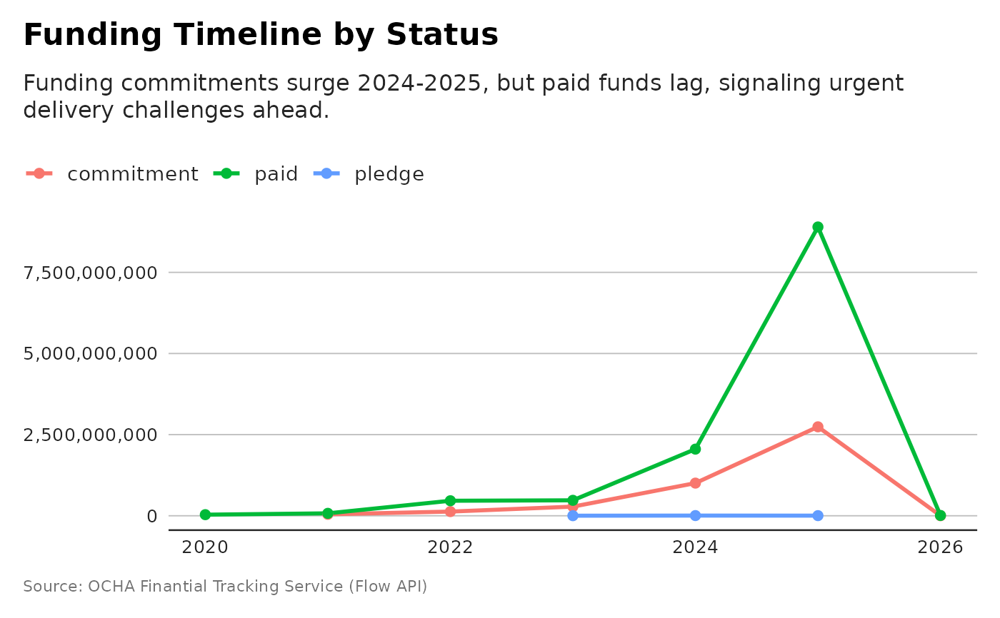

Plot Funding Timeline by Status
plot_funding_status_timeline.RdShows the evolution of funding amounts by status (pledge, commitment, paid) across budget years. Useful for tracking donor disbursement progress.
Examples
p <- plot_funding_status_timeline(flows)
# getting LLm story
story <- generate_plot_story(p, max_tokens = 300)
#> Using model = "gemini-2.5-flash".
cat(story)
#> This visualization maps the critical journey of humanitarian funding, tracking its evolution from initial pledges to firm commitments and, ultimately, to actual paid disbursements. While decades past showed a steady flow, the 2020s mark a dramatic escalation in humanitarian financial needs, reflected in rapidly increasing pledges and commitments.
#>
#> However, a striking disparity emerges when we look at the projections for 2024 and 2025. While billions of dollars are pledged and committed for future humanitarian action – for instance, over $10 billion in commitments for 2025 alone – the actual paid funding remains a fraction of these announced intentions. For 2025, only about $4.4 million is shown as paid, starkly contrasting the significant commitments.
#>
#> This widening gap highlights a persistent challenge: converting donor goodwill and financial promises into tangible resources on the ground. The humanitarian system relies on the swift and efficient movement of funds to address escalating crises. Delays in disbursement can severely impact aid delivery, underscoring the critical need to bridge the gap between financial commitment and life-saving action.
# and plot with more powerful subtitle
dubbed <- generate_plot_story(p)
#> Using model = "gemini-2.5-flash".
p + ggplot2::labs(subtitle = dubbed)
#> Warning: Removed 3 rows containing missing values or values outside the scale range
#> (`geom_line()`).
#> Warning: Removed 3 rows containing missing values or values outside the scale range
#> (`geom_point()`).
